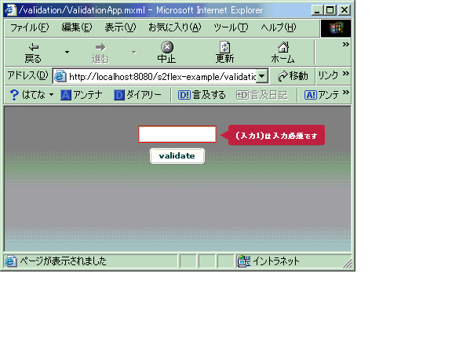

|
 |
|||||
S2FlexとはS2Flexを使うと、S2Container上に登録されているコンポーネントのメソッドをFlexから簡単に呼び出せるようになります。 セットアップSeasar2と同様にJDK1.4以上が必要です。S2FlexVx.x.x.zipを解凍してできたs2flexディレクトリをEclipseで、｢ファイル→インポート→既存のプロジェクトをワークスペースへ｣でインポートしてください。 S2Flexのソースを確認できます。flashgateway.jarがないので、エラーになりますが、これは、Flexのjarファイルを勝手に配布できないためです。コンパイルするためには、Flexに含まれているflashgateway.jarをs2flex/libにインポートしてください。 Flex1.5が対象です。ここから試用版をダウンロードできます。サンプルは、Tomcat、Tomcat Pluginを使うことを前提にしているので、Flexは、JRun統合モードではなく、Macromedia Flexモードでインストールしてください。このドキュメントでは、Flexをインストールしたディレクトリを$FLEX_HOMEと呼ぶことにします。 サンプルはS2FlexExamleVx.x.x.jarとして別途用意されているので、ダウンロードして解凍してください。先程と同様に、Eclipseで、｢ファイル→インポート→既存のプロジェクトをワークスペースへ｣でインポートします。次に、Flexの環境を整えます。$FLEX_HOME/flex.warを適当なディレクトリで解凍(jar xf flex.war)してください。解凍してできたWEB-INFディレクトリをs2flex-example/WEB-INFにまるごと、インポートします。S2Containerを起動するために、web.xmlに次の内容を書き込みます。 <servlet> FlexのAMFGatewayがS2Container上のコンポーネントのメソッドを呼び出せるようにするために、s2flex-example/WEB-INF/flex/gateway-config.xmlにSeasar2用のアダブタを追加します。 <service-adapters> アプリケーションでlog4jによるロギングを可能にするために、WEB-INF/flex/jarsにあるcommons-loging.jarをWEB-INF/libに移動します。 JavaBeansとActionScriptのクラスとのマッピングJavaBeansとActionScriptのクラスをマッピングしてJavaとFlexで相互にデータをやり取りできます。例として次のような足し算のデータをやり取りするようなJavaBeansを定義します。
package examples.flex;
import java.io.Serializable;
public class AddDto implements Serializable {
private int arg1;
private int arg2;
private int result;
public int getArg1() {
return arg1;
}
public void setArg1(int arg1) {
this.arg1 = arg1;
}
public int getArg2() {
return arg2;
}
public void setArg2(int arg2) {
this.arg2 = arg2;
}
public int getResult() {
return result;
}
public void setResult(int result) {
this.result = result;
}
}
これに対応するActionScriptのクラスを作成します。
class examples.flex.AddDto {
var _remoteClass:String;
var arg1:Number;
var arg2:Number;
var result:Number;
function AddDto() {
_remoteClass = "examples.flex.AddDto";
}
}
ポイントは、次の通りです。
後は、Flex側でvarでクラス名指定で変数を宣言するか、次のようにクラス名をタグ名として宣言します。xmlns属性でパッケージ名を指定します。 <AddDto id="addDto2" xmlns="examples.flex.*"/> メッセージの多言語対応Javaでは、プロパティファイルにロケールごとにメッセージを用意して簡単に多言語に対応することが出来ますが、そのプロパティファイルをFlexから利用する機能がS2Flexには用意されています。例えば、次のようなプロパティファイルをWEB-INF/classes直下に用意したとします。 FLXMessages_ja.propertiesEFLX0001=({0})は入力必須です
FLXMessages.propertiesEFLX0001=({0}) is mandatory
Eclipseで日本語でプロパティを扱うためには、プロパティエディタを使うと便利です。次にこのプロパティファイルをFlex側から利用するためのコンポーネントをdiconファイルに登録します。 <component name="messageLogic" class="org.seasar.flex.message.MessageLogicImpl"/> また、このコンポーネントをFlexから利用するためには、WEB-INF/flex/flex-config.xmlへの登録も必要です。 <object name="messageLogic"> Java側の準備ができました。次は、Flex側を準備します。最初に、s2flex/as2/orgディレクトリをWEB-INF/flex/user_classesに丸ごとコピーします。次に、messageLogicを呼び出すためにRemoteObjectタグを定義します。サーバサイドから戻り値が戻ってきたときの処理として、processMessageManager()を呼び出します。event.resultには、MessageManagerオブジェクトが入ってきます。 <mx:RemoteObject id="messageLogic" named="messageLogic" messageLogicは、アプリケーションの起動時に呼び出します。 <mx:Application xmlns:mx="http://www.macromedia.com/2003/mxml" initialize="initApp()"> import org.seasar.flex.message.*;
function initApp() {
messageLogic.getMessageManager("FLXMessages", "ja");
}
processMessageManager()では、取得したMessageManagerオブジェクトをMessageManagerクラスのstatic変数(instance)に格納しています。
import org.seasar.flex.message.*;
class org.seasar.flex.message.MessageManager {
static var instance:MessageManager;
...
}
function processMessageManager(messageManager:MessageManager) {
いよいよ、Validatorを作ります。今回作るのは、必須チェックを行うValidatorです。Validatorは、mx.validators.Validatorを継承して、doValidation(value)を実装します。valueには入力された値が入っています。エラーが起きた場合は、Validator#validationError()でエラーメッセージを出力します。MessageManagerオブジェクトは、MessageManager.instanceで参照することが出来ます。後は、getMessage(メッセージコード, 引数の配列)を呼び出すだけです。 import org.seasar.flex.message.*;
class RequiredFieldValidator extends mx.validators.Validator {
var fieldName:String;
function doValidation(value) : Void {
if (value == undefined || value == "") {
var args:Array = new Array();
args[0] = fieldName;
validationError("required", MessageManager.instance.getMessage("EFLX0001", args));
}
}
}
このサンプルは、s2flex-example/validationに格納されています。ブラウザから、http://localhost:8080/s2flex-example/validation/ValidationApp.mxmlにアクセスしてください。何も入力せずにvalidateボタンをクリックするとエラーのメッセージが表示され、次のようにTextInputにバルーンでメッセージが表示されます。 Exampleそれでは、さっそく足し算するサンプルを作ってみましょう。Javaのインターフェースと実装を用意します。 examples.flex.AddLogic
package examples.flex;
public interface AddLogic {
public int calculate(int arg1, int arg2);
public AddDto calculate2(AddDto addDto);
}
examples.flex.AddLogicImpl
package examples.flex;
public class AddLogicImpl implements AddLogic {
public int calculate(int arg1, int arg2) {
return arg1 + arg2;
}
public AddDto calculate2(AddDto addDto) {
return addDto.setResult(addDto.getArg1() + addDto.getArg2());
}
}
コンポーネントをdiconファイルに登録します。 examples/flex/flex.dicon<?xml version="1.0" encoding="Shift_JIS"?> app.dicon<?xml version="1.0" encoding="Shift_JIS"?> 登録したコンポーネントをFlexから呼び出せるようにs2flex-example/WEB-INF/flex/flex-config.xmlのflex-config/remote-objects/whitelistに次のエントリを追加します。 <named> objectタグで、コンポーネントを指定します。sourceタグで指定するのが、S2Containerで定義したコンポーネント名です。name属性は、source属性とあわせたほうが分かりやすいでしょう。コンポーネントを追加する場合は、objectタグを追加します。Flex1.0を使う場合、上記の内容を書き込んだファイルが、s2flex-example/WEB-INF/flex/flex-config-s2flex.xmlにあらかじめ用意されているので、flex-config.xmlに上書きコピーします。Flex1.5を使う場合、同様にflex-config-s2flex15.xmlをコピーします。 最後は、Flexのアプリケーションのソースです。Add.mxml,Add2.xmlファイルをプロジェクトのルートにおきます。 Add.mxml
<?xml version="1.0" encoding="utf-8"?>
<mx:Application xmlns:mx="http://www.macromedia.com/2003/mxml">
<mx:RemoteObject id="addLogic" named="addLogic"
fault="alert(event.fault.faultstring, 'Error')">
</mx:RemoteObject>
RemoteObjectタグで、Javaのコンポーネントを指定します。named属性にflex-config.xmlのobjectタグのname属性で指定した値を記述します。id属性は、named属性とあわせたほうが分かりやすいでしょう。後は、ActionScriptの中から、コンポーネント名.メソッド名(...)で呼び出すことができます。{addLogic.calculate.result}のようにして、calculateメソッドの呼び出し結果をLabelのvalueに自動的に設定できます。 これで、完成です。Tomcatを再起動して、ブラウザから、http://localhost:8080/s2flex-example/Add.mxmlにアクセスしてください。 次はJavaBeansを使うときの例です。 Add2.mxml<?xml version="1.0" encoding="utf-8"?>
<mx:Application xmlns:mx="http://www.macromedia.com/2003/mxml">
<mx:RemoteObject id="addLogic" named="addLogic"
fault="alert(event.fault.faultstring, 'Error')">
</mx:RemoteObject>
ブラウザから、http://localhost:8080/s2flex-example/Add2.mxmlにアクセスしてください。 |
||
| © Copyright The Seasar Project and the others 2004, all rights reserved. |